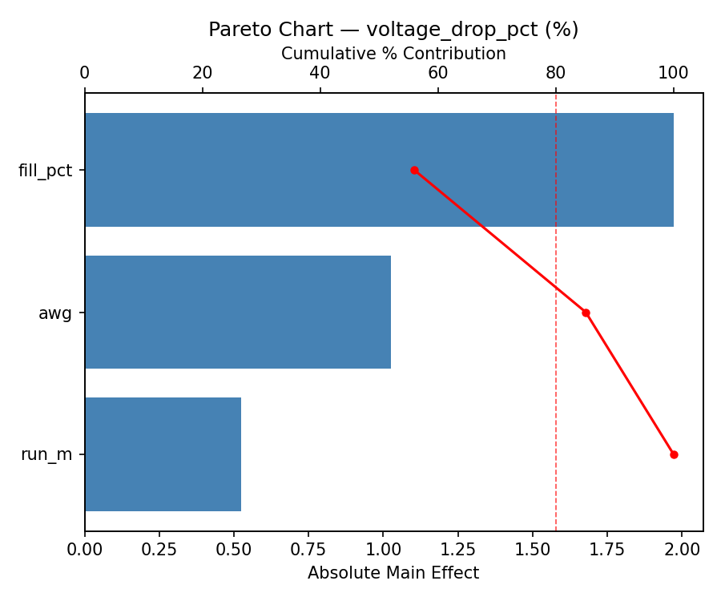
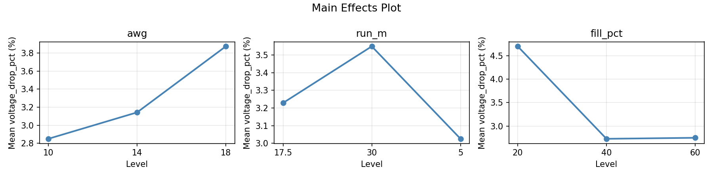
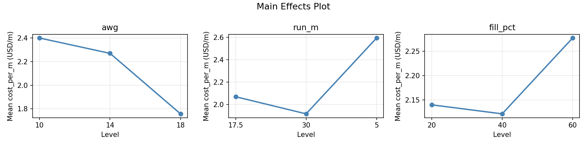
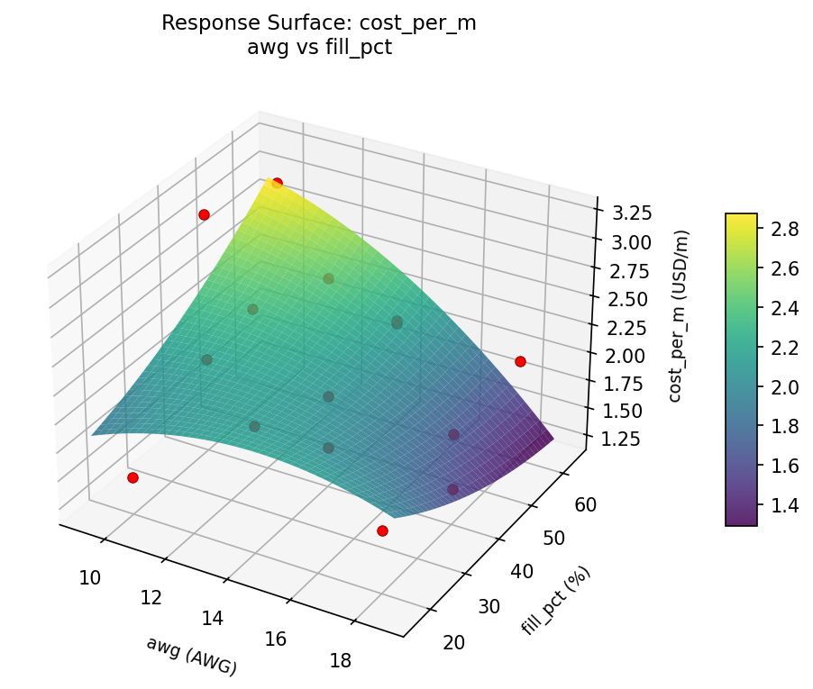
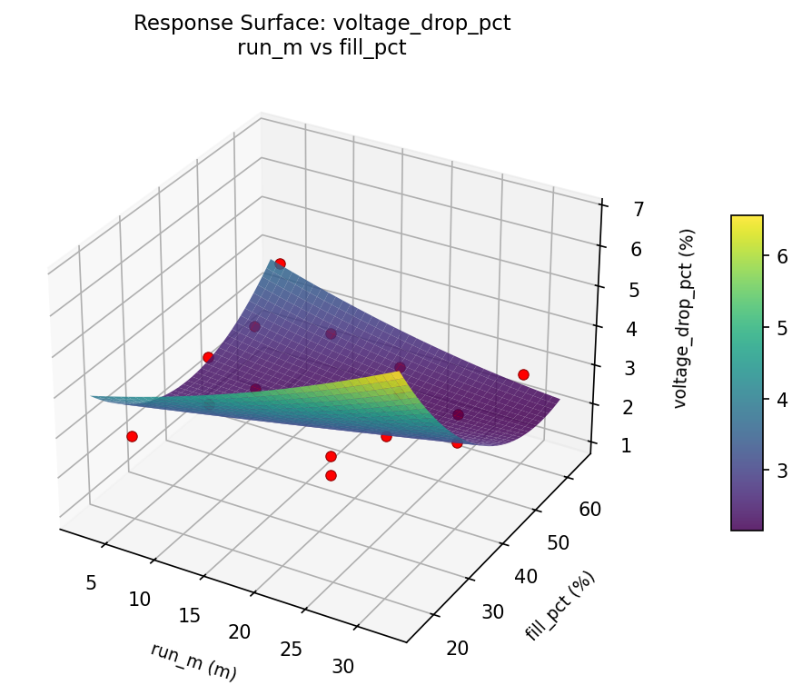

Summary
This experiment investigates wire gauge & run length. Box-Behnken design to minimize voltage drop and maximize cost efficiency by tuning wire gauge, run length, and conduit fill ratio.
The design varies 3 factors: awg (AWG), ranging from 10 to 18, run m (m), ranging from 5 to 30, and fill pct (%), ranging from 20 to 60. The goal is to optimize 2 responses: voltage drop pct (%) (minimize) and cost per m (USD/m) (minimize). Fixed conditions held constant across all runs include circuit = 20A_120V, conductor = copper.
A Box-Behnken design was chosen because it efficiently fits quadratic models with 3 continuous factors while avoiding extreme corner combinations — requiring only 15 runs instead of the 8 needed for a full factorial at two levels.
Quadratic response surface models were fitted to capture potential curvature and factor interactions. The RSM contour plots below visualize how pairs of factors jointly affect each response.
Key Findings
For voltage drop pct, the most influential factors were fill pct (56.0%), awg (29.1%), run m (14.9%). The best observed value was 1.1 (at awg = 18, run m = 30, fill pct = 40).
For cost per m, the most influential factors were run m (46.0%), awg (43.5%), fill pct (10.6%). The best observed value was 1.43 (at awg = 14, run m = 17.5, fill pct = 40).
Recommended Next Steps
- Run confirmation experiments at the predicted optimal settings to validate the model.
- Consider whether any fixed factors should be varied in a future study.
Experimental Setup
Factors
| Factor | Low | High | Unit |
|---|
awg | 10 | 18 | AWG |
run_m | 5 | 30 | m |
fill_pct | 20 | 60 | % |
Fixed: circuit = 20A_120V, conductor = copper
Responses
| Response | Direction | Unit |
|---|
voltage_drop_pct | ↓ minimize | % |
cost_per_m | ↓ minimize | USD/m |
Configuration
{
"metadata": {
"name": "Wire Gauge & Run Length",
"description": "Box-Behnken design to minimize voltage drop and maximize cost efficiency by tuning wire gauge, run length, and conduit fill ratio"
},
"factors": [
{
"name": "awg",
"levels": [
"10",
"18"
],
"type": "continuous",
"unit": "AWG"
},
{
"name": "run_m",
"levels": [
"5",
"30"
],
"type": "continuous",
"unit": "m"
},
{
"name": "fill_pct",
"levels": [
"20",
"60"
],
"type": "continuous",
"unit": "%"
}
],
"fixed_factors": {
"circuit": "20A_120V",
"conductor": "copper"
},
"responses": [
{
"name": "voltage_drop_pct",
"optimize": "minimize",
"unit": "%"
},
{
"name": "cost_per_m",
"optimize": "minimize",
"unit": "USD/m"
}
],
"settings": {
"operation": "box_behnken",
"test_script": "use_cases/277_wire_gauge_selection/sim.sh"
}
}
Experimental Matrix
The Box-Behnken Design produces 15 runs. Each row is one experiment with specific factor settings.
| Run | awg | run_m | fill_pct |
|---|
| 1 | 14 | 5 | 20 |
| 2 | 14 | 17.5 | 40 |
| 3 | 18 | 17.5 | 60 |
| 4 | 18 | 17.5 | 20 |
| 5 | 14 | 17.5 | 40 |
| 6 | 14 | 17.5 | 40 |
| 7 | 10 | 17.5 | 60 |
| 8 | 18 | 5 | 40 |
| 9 | 14 | 5 | 60 |
| 10 | 18 | 30 | 40 |
| 11 | 10 | 17.5 | 20 |
| 12 | 14 | 30 | 60 |
| 13 | 10 | 5 | 40 |
| 14 | 10 | 30 | 40 |
| 15 | 14 | 30 | 20 |
Step-by-Step Workflow
1
Preview the design
$ python doe.py info --config use_cases/277_wire_gauge_selection/config.json
2
Generate the runner script
$ python doe.py generate --config use_cases/277_wire_gauge_selection/config.json \
--output use_cases/277_wire_gauge_selection/results/run.sh --seed 42
3
Execute the experiments
$ bash use_cases/277_wire_gauge_selection/results/run.sh
4
Analyze results
$ python doe.py analyze --config use_cases/277_wire_gauge_selection/config.json
5
Get optimization recommendations
$ python doe.py optimize --config use_cases/277_wire_gauge_selection/config.json
6
Generate the HTML report
$ python doe.py report --config use_cases/277_wire_gauge_selection/config.json \
--output use_cases/277_wire_gauge_selection/results/report.html
Features Exercised
| Feature | Value |
|---|
| Design type | box_behnken |
| Factor types | continuous (all 3) |
| Arg style | double-dash |
| Responses | 2 (voltage_drop_pct ↓, cost_per_m ↓) |
| Total runs | 15 |
Analysis Results
Generated from actual experiment runs using the DOE Helper Tool.
Response: voltage_drop_pct
Top factors: fill_pct (56.0%), awg (29.1%), run_m (14.9%).
Pareto Chart

Main Effects Plot

Response: cost_per_m
Top factors: run_m (46.0%), awg (43.5%), fill_pct (10.6%).
Pareto Chart

Main Effects Plot

Response Surface Plots
3D surfaces fitted with quadratic RSM. Red dots are observed data points.
cost per m awg vs fill pct

cost per m awg vs run m

cost per m run m vs fill pct

voltage drop pct awg vs fill pct

voltage drop pct awg vs run m

voltage drop pct run m vs fill pct

Full Analysis Output
RSM surface: rsm_voltage_drop_pct_awg_vs_run_m.png
RSM surface: rsm_voltage_drop_pct_awg_vs_fill_pct.png
RSM surface: rsm_voltage_drop_pct_run_m_vs_fill_pct.png
RSM surface: rsm_cost_per_m_awg_vs_run_m.png
RSM surface: rsm_cost_per_m_awg_vs_fill_pct.png
RSM surface: rsm_cost_per_m_run_m_vs_fill_pct.png
=== Main Effects: voltage_drop_pct ===
Factor Effect Std Error % Contribution
--------------------------------------------------------------
fill_pct 1.9714 0.3818 56.0%
awg 1.0250 0.3818 29.1%
run_m 0.5250 0.3818 14.9%
=== Summary Statistics: voltage_drop_pct ===
awg:
Level N Mean Std Min Max
------------------------------------------------------------
10 4 2.8500 1.4708 1.6000 4.9000
14 7 3.1429 1.4409 1.1000 4.7000
18 4 3.8750 1.7689 2.3000 6.4000
run_m:
Level N Mean Std Min Max
------------------------------------------------------------
17.5 7 3.2286 2.0702 1.1000 6.4000
30 4 3.5500 0.8266 2.9000 4.7000
5 4 3.0250 0.8732 2.0000 4.1000
fill_pct:
Level N Mean Std Min Max
------------------------------------------------------------
20 4 4.7000 1.4765 2.8000 6.4000
40 7 2.7286 1.2486 1.1000 4.7000
60 4 2.7500 1.0661 1.6000 4.1000
=== Main Effects: cost_per_m ===
Factor Effect Std Error % Contribution
--------------------------------------------------------------
run_m 0.6800 0.1618 46.0%
awg 0.6425 0.1618 43.5%
fill_pct 0.1561 0.1618 10.6%
=== Summary Statistics: cost_per_m ===
awg:
Level N Mean Std Min Max
------------------------------------------------------------
10 4 2.4000 0.8427 1.4500 3.2100
14 7 2.2700 0.6056 1.4700 3.2100
18 4 1.7575 0.2615 1.4300 2.0100
run_m:
Level N Mean Std Min Max
------------------------------------------------------------
17.5 7 2.0686 0.6541 1.4500 3.0000
30 4 1.9150 0.3445 1.4300 2.2300
5 4 2.5950 0.7118 1.9200 3.2100
fill_pct:
Level N Mean Std Min Max
------------------------------------------------------------
20 4 2.1400 0.7853 1.4500 3.2100
40 7 2.1214 0.6933 1.4300 3.2100
60 4 2.2775 0.4821 2.0100 3.0000
Pareto chart (voltage_drop_pct): use_cases/277_wire_gauge_selection/results/analysis/pareto_voltage_drop_pct.png
Pareto chart (cost_per_m): use_cases/277_wire_gauge_selection/results/analysis/pareto_cost_per_m.png
Main effects (voltage_drop_pct): use_cases/277_wire_gauge_selection/results/analysis/main_effects_voltage_drop_pct.png
Main effects (cost_per_m): use_cases/277_wire_gauge_selection/results/analysis/main_effects_cost_per_m.png
Optimization Recommendations
=== Optimization: voltage_drop_pct ===
Direction: minimize
Best observed run: #13
awg = 18
run_m = 30
fill_pct = 40
Value: 1.1
RSM Model (linear, R² = 0.0223, Adj R² = -0.2444):
Coefficients:
intercept +3.2600
awg -0.0625
run_m -0.1375
fill_pct +0.2500
RSM Model (quadratic, R² = 0.5811, Adj R² = -0.1728):
Coefficients:
intercept +3.4333
awg -0.0625
run_m -0.1375
fill_pct +0.2500
awg*run_m -0.3000
awg*fill_pct -0.1250
run_m*fill_pct -0.4250
awg^2 -1.2667
run_m^2 -0.5167
fill_pct^2 +1.4583
Curvature analysis:
fill_pct coef=+1.4583 convex (has a minimum)
awg coef=-1.2667 concave (has a maximum)
run_m coef=-0.5167 concave (has a maximum)
Notable interactions:
run_m*fill_pct coef=-0.4250 (antagonistic)
awg*run_m coef=-0.3000 (antagonistic)
Predicted optimum (from quadratic model):
awg = 14
run_m = 5
fill_pct = 60
Predicted value: 5.1875
Model quality: Moderate fit — use predictions directionally, not precisely.
Factor importance:
1. fill_pct (effect: 1.8, contribution: 47.1%)
2. awg (effect: 1.4, contribution: 35.8%)
3. run_m (effect: 0.7, contribution: 17.1%)
=== Optimization: cost_per_m ===
Direction: minimize
Best observed run: #8
awg = 14
run_m = 17.5
fill_pct = 40
Value: 1.43
RSM Model (linear, R² = 0.1045, Adj R² = -0.1397):
Coefficients:
intercept +2.1680
awg -0.2462
run_m -0.0413
fill_pct +0.0975
RSM Model (quadratic, R² = 0.4988, Adj R² = -0.4033):
Coefficients:
intercept +2.2900
awg -0.2462
run_m -0.0413
fill_pct +0.0975
awg*run_m +0.5025
awg*fill_pct -0.1750
run_m*fill_pct -0.0200
awg^2 +0.2862
run_m^2 -0.1038
fill_pct^2 -0.4112
Curvature analysis:
fill_pct coef=-0.4112 concave (has a maximum)
awg coef=+0.2862 convex (has a minimum)
run_m coef=-0.1038 concave (has a maximum)
Notable interactions:
awg*run_m coef=+0.5025 (synergistic)
Predicted optimum (from linear model):
awg = 10
run_m = 17.5
fill_pct = 60
Predicted value: 2.5118
Model quality: Weak fit — consider adding center points or using a different design.
Factor importance:
1. awg (effect: 0.6, contribution: 46.4%)
2. fill_pct (effect: 0.5, contribution: 42.5%)
3. run_m (effect: 0.1, contribution: 11.1%)